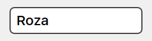

Property System#
Property System is a data binding mechanism based on signal-slot system.
Detailed Description#
Experimental Feature
This API is experimental. Experimental APIs are likely to contain bugs, might be changed or removed in the future.
AUI property system, a compiler-agnostic framework to make observable variables. This is a pure C++ alternative to:
- QProperty
- RxJS
- JavaRX
Note
This page is about presenting individual values. For lists, see AForEachUI.
AUI property system is relatively complex, as it involves a lot of features in a single place:
- thread safe
- many-to-many relationships between objects
- optional data modification when passing values between objects (like STL projections)
- emitter can be either signal or property
- slot can be either lambda, method or property
- for the latter case, system must set up backward connection as well (including projection support)
- again, for the latter case, there's an option to make property-to-slot connection, where the "slot" is property's assignment operation
- 2 syntax variants: procedural (straightforward) and declarative
- three property variants: simple field (AProperty), custom getter/setter (APropertyDef) and custom evaluation (APropertyPrecomputed)
- some properties can be readonly
- propagating strong types' traits on views
Learning curve is relatively flat, so be sure to ask questions and open issues on our GitHub page.
Main difference between basic value lying somewhere inside your class and a property is that the latter explicitly
ties getter, setter and a signal reporting value changes. Property acts almost transparently, as if there's no
extra wrapper around your data. This allows to work with properties in the same way as with their underlying values.
You can read the intermediate value of a property and subscribe to its changes via a single
connect call. Also, when connecting property to property, it is possible to make them observe changes of each
other bia biConnect call:
struct User {
AProperty<AString> name;
};
auto user = aui::ptr::manage_shared(new User { .name = "Robert" });
auto tf = _new<ATextField>();
AObject::biConnect(user->name, tf->text());
auto window = _new<AWindow>();
window->setContents(Centered { tf });
window->show();

A single call of biConnect:
- Prefills text field with the current
user->namevalue (pre fire): - Connects
user->named.changedtotfto notify the text field about changes ofuser->name:
- Connects
tf->text().changedto notify theuser->nameproperty about changes in text field (i.e., if the user typed another value to the text field):

// user typed "Snezhana", now let's check the value in user->name:
EXPECT_EQ(user->name, "Snezhana");
This is basic example of setting up property-to-property connection.
Declaring Properties#
There are several ways to define a property in AUI:
- AProperty - basic wrapper property type for data models
- APropertyDef - property-compliant view type to tie custom getter, setter and signal together
- APropertyPrecomputed - readonly property whose value is determined by a callable that references other properties
Please check their respective documentation pages for an additional information.
UI data binding with AUI_LET#
Note
This is a comprehensive, straightforward way of setting up a connection. We are demonstrating it here so you can get deeper understanding on how connections are made and what does declarative way do under the hood. This way may be used in favour of declarative way if the latter not work for you. For declarative way, go to UI declarative data binding.
This approach allows more control over the binding process by using AObject::connect/AObject::biConnect which is
a procedural way of setting up connections. As a downside, it requires "AUI_LET" syntax clause which may seem as overkill
for such a simple operation.
Label via let#
Use AUI_LET expression to connect the model's username property to the label's text()
property.
using namespace declarative;
struct User {
AProperty<AString> name;
};
auto user = aui::ptr::manage_shared(new User { .name = "Roza" });
class MyWindow: public AWindow {
public:
MyWindow(const _<User>& user) {
setContents(Centered {
_new<ALabel>() AUI_LET {
// Data goes from left to right:
// current value (pre fire) or changed event
// goes to assignment operation of it->text()
AObject::connect(user->name, it->text());
// -> -> -> -> ->
// in other words, this connection is essentially the
// same as
// AObject::connect(user->name, AUI_SLOT(it)::setText);
//
// if you want user->name to be aware or it->text()
// changes (i.e., if it were an editable view
// like ATextField) use AObject::biConnect instead
// (see "Bidirectional connection" sample).
},
});
}
};
_new<MyWindow>(user)->show();
This gives the following result:
 Note that label already displays the value stored in User.
Note that label already displays the value stored in User.
Let's change the name:

By simply performing assignment on user we changed ALabel display text. Magic, huh?
Label via let projection#
It's fairly easy to define a projection because one-sided connection requires exactly one projection, obviously.
_new<ALabel>() AUI_LET {
// Data goes from left to right:
// current value (pre fire) or changed event
// goes through projection (&AString::uppercase) first
// then it goes to assignment operation of it->text()
// property.
AObject::connect(user->name.readProjected(&AString::uppercase), it->text());
// -> -> -> -> -> -> -> -> -> -> -> ->
// in other words, this connection is essentially the same as
// AObject::connect(user->name.projected(&AString::uppercase), AUI_SLOT(it)::setText);
// if view's property gets changed (i.e., by user or by occasional
// ALabel::setText), these changes DO NOT reflect on model
// as we requested connect() here instead of biConnect().
},
This gives the following result:
 Note that the label already displays the projected value stored in User.
Note that the label already displays the projected value stored in User.
Let's change the name:

This way, we've set up data binding with projection.
Bidirectional connection#
In previous examples, we've used AObject::connect to make one directional (one sided) connection. This is
perfectly enough for ALabel because it cannot be changed by user.
In some cases, you might want to use property-to-property as it's bidirectional. It's used for populating view from model and obtaining data from view back to the model.
For this example, let's use ATextField instead of ALabel as it's an editable view. In this case, we'd want to use
AObject::biConnect because we do want user->name to be aware of changes of the view.
_new<ATextField>() AUI_LET {
// Data goes from left to right in the first place
// (i.e., user->name current value overrides it->text())
// if view's property gets changed (i.e., by user),
// these changes reflect on model
// as we requested biConnect here
// -> value + changes ->
AObject::biConnect(user->name, it->text());
// <- changes only <-
},
This gives the following result: 
Let's change the name programmatically:
ATextField will respond:

If the user changes the value from UI, these changes will reflect on user->model as well:

This way we've set up bidirectional projection via AObject::biConnect which makes user->name aware of UI
changes.
Bidirectional projection#
Bidirectional connection updates values in both directions, hence it requires the projection to work in both sides as well.
It is the case for ADropdownList with enums. ADropdownList works with string list model and indices. It does not know anything about underlying values.
For example, define enum with AUI_ENUM_VALUES and model:
enum class Gender {
MALE,
FEMALE,
OTHER,
};
AUI_ENUM_VALUES(Gender,
Gender::MALE,
Gender::FEMALE,
Gender::OTHER)
struct User {
AProperty<Gender> gender;
// we've omitted other fields for sake of simplicity
};
Now, let's get a mapping for our Gender enum:
The compile-time constant above is equivalent to:
We just using aui::enumerate::ALL_VALUES because it was provided conveniently by AUI_ENUM_VALUES for us.
It's not hard to guess that we'll use indices of this array to uniquely identify Gender associated with this
index:
To perform opposite operation (i.e., Gender to int), we can use aui::indexOf:
/* pseudocode */
aui::indexOf(GENDERS, Gender::MALE); // -> 0
aui::indexOf(GENDERS, Gender::FEMALE); // -> 1
aui::indexOf(GENDERS, Gender::OTHER); // -> 2
To bring these conversions together, let's use overloaded lambda:
static constexpr auto GENDER_INDEX_PROJECTION = aui::lambda_overloaded {
[](Gender g) -> int { return aui::indexOf(GENDERS, g).valueOr(0); },
[](int i) -> Gender { return GENDERS[i]; },
};
Note
It's convenient to use lambda trailing return type syntax (i.e., ... -> int, ... -> Gender)
to make it obvious what do transformations do and how one type is transformed to another.
The function-like object above detects the direction of transformation and performs as follows:
It is all what we need to set up bidirectional transformations. Inside AUI_ENTRY:
auto user = aui::ptr::manage_shared(new User { .gender = Gender::MALE });
class MyWindow: public AWindow {
public:
MyWindow(const _<User>& user) {
// generate a string list model for genders from GENDERS array defined earlier
auto gendersStr = AListModel<AString>::fromVector(
GENDERS
| ranges::views::transform(AEnumerate<Gender>::toName)
| ranges::to_vector);
// equivalent:
// gendersStr = { "MALE", "FEMALE", "OTHER" }
// you can customize the displayed strings by playing with
// ranges::views::transform argument.
setContents(Centered {
_new<ADropdownList>(gendersStr) AUI_LET {
// AObject::connect(user->gender, it->selectionId());
//
// The code above would break, because Gender and int
// (selectionId() type) are incompatible.
//
// Instead, define bidirectional projection:
AObject::biConnect(
user->gender.biProjected(GENDER_INDEX_PROJECTION),
it->selectionId());
},
});
}
};
_new<MyWindow>(user)->show();

-
If we try to change
user->genderprogrammatically, ADropdownList will respond:
-
If the user changes the value of ADropdownList, it reflects on the model as well:

UI declarative data binding#
As said earlier, AUI_LET syntax is a little bit clunky and requires extra boilerplate code to set up.
Here's where declarative syntax comes into play. The logic behind the syntax is the same as in
AObject::connect/AObject::biConnect (for ease of replacement/understanding).
The example below is essentially the same as Label via let but uses declarative connection set up syntax.
Label via declarative#
Use & and > expression to connect the model's username property to the label's text
property.
using namespace declarative;
struct User {
AProperty<AString> name;
};
auto user = aui::ptr::manage_shared(new User { .name = "Roza" });
class MyWindow: public AWindow {
public:
MyWindow(const _<User>& user) {
setContents(Centered {
Label { AUI_REACT(user->name) },
});
}
};
auto window = _new<MyWindow>(user);
window->show();
Let's change the name:
In this example, we've achieved the same intuitive behaviour of data binding of user->name (like in
Label via let example) but using declarative syntax.
ADataBindingDefault for omitting view property#
In previous example we have explicitly specified ALabel's property to connect with.
One of notable features of declarative way (in comparison to procedural AUI_LET way) is that we can omit the view's
property to connect with if such ADataBindingDefault specialization exist for the target view and the property
type. Some views have already predefined such specialization for their underlying types. For instance, ALabel has
such specialization:
/* PREDEFINED! You don't need to define it! This listing is an example */
template<>
struct ADataBindingDefault<ALabel, AString> {
public:
static auto property(const _<ALabel>& view) { return view->text(); }
};
We can use this predefined specialization to omit the destination property:
_new<ALabel>() & user->name
Behaviour of such connection is equal to Label via declarative:
Note that the label already displays the value stored in User.
Let's change the name:
In this example, we've omitted the destination property of the connection while maintaining the same behaviour
as in Label via declarative.
ADataBindingDefault strong type propagation#
Think of ADataBindingDefault as we're not only connecting properties to properties, but also creating a
"property to view" relationship. This philosophy covers the following scenario.
In AUI, there's aui::ranged_number template which stores valid value range right inside the type:
struct User {
AProperty<aui::ranged_number<int, 1, 99>> age;
};
These strong types can be used to propagate their traits on views, i.e., ANumberPicker. When using declarative
syntax, the property system calls ADataBindingDefault::setup to apply some extra traits of the bound value on
the view. Here's an abstract on how ANumberPicker defines specialization of ADataBingingDefault with
aui::ranged_number:
/* PREDEFINED! You don't need to define it! This listing is an example */
template <aui::arithmetic UnderlyingType, auto min, auto max>
struct ADataBindingDefault<ANumberPicker, aui::ranged_number<UnderlyingType, min, max>> {
public:
static auto property(const _<ANumberPicker>& view) {
return view->value();
}
static void setup(const _<ANumberPicker>& view) {
view->setMin(aui::ranged_number<UnderlyingType, min, max>::MIN);
view->setMax(aui::ranged_number<UnderlyingType, min, max>::MAX);
}
// ...
};
As you can see, this specialization pulls the min and max values from aui::ranged_number type and sets them
to ANumberPicker. This way ANumberPicker finds out the valid range of values by simply being bound to value
that has constraints encoded inside its type.
_new<ANumberPicker>() && user->age,
Note
We're using operator&& here to set up bidirectional connection. For more info, go to
Declarative bidirectional connection.
By creating this connection, we've done a little bit more. We've set ANumberPicker::setMin and ANumberPicker::setMax as well:
This example demonstrates how to use declarative binding to propagate strong types. aui::ranged_number
propagates its constraints on ANumberPicker thanks to ADataBindingDefault specialization.
Label via declarative projection#
We can use projections in the same way as with AUI_LET.
using namespace declarative;
struct User {
AProperty<AString> name;
};
auto user = aui::ptr::manage_shared(new User { .name = "Roza" });
class MyWindow: public AWindow {
public:
MyWindow(const _<User>& user) {
_<ALabel> label;
setContents(Centered {
_new<ALabel>() & user->name.readProjected(&AString::uppercase)
});
}
};
auto window = _new<MyWindow>(user);
window->show();
Note that the label already displays the projected value stored in User.
Projection applies to value changes as well. Let's change the name:
user->name = "Vasil";
EXPECT_EQ(user->name, "Vasil");
EXPECT_EQ(label->text(), "VASIL"); // projected
Declarative bidirectional connection#
In previous examples, we've used & to make one directional (one sided) connection. This is
perfectly enough for ALabel because it cannot be changed by user.
In some cases, you might want to use property-to-property as it's bidirectional. It's used for populating view from model and obtaining data from view back to the model.
For this example, AUI_LET's use ATextField instead of ALabel as it's an editable view. In this case, we'd want to use
&& because we do want user->name to be aware of changes of the view.
_new<ATextField>() && user->name
This gives the following result:
Let's change the name programmatically:
ATextField will respond:
If the user changes the value from UI, these changes will reflect on user->model as well:
This way we've set up bidirectional projection via && which makes user->name aware of UI
changes.
Declarative bidirectional projection#
We can use projections in the same way as with AUI_LET.
Let's repeat the Bidirectional projection sample in declarative way:
_new<ADropdownList>(gendersStr) && user->gender.biProjected(GENDER_INDEX_PROJECTION) > &ADropdownList::selectionId
Note
We used the && operator here instead of & because we want the connection work in both
directions: user.gender -> ADropdownList and ADropdownList -> user.gender.
-
If we try to change
user->genderprogrammatically, ADropdownList will respond:
-
If the user changes the value of ADropdownList, it reflects on the model as well:
Related Pages#
-
Readonly property that holds a value computed by an expression.
-
Observable container of
T. -
Property implementation to use with custom getter/setter.
-
Temporary transparent object that gains write access to underlying property's value, notifying about value changes when destructed.